I implemented several more useful features on top of those added in project 3-1 such that the pathtracer is able to render a wider variety of materials and environments. Not only is the pathtracer able to render mirror, glossy (microfacet), and glass materials, but it is also capable of rendering environments with environmental light sources as well as with depth of field parameters that simulate a thin lens camera. Debugging these parts got to be quite the pain, especially when trying to figure out parameters to use to show depth of field working. However, all this work was worth being able to witness cool things get rendered! Also, thank god adaptive sampling exists.
Fundamental to implementing a mirror BSDF is the BSDF::reflect function, which generates an input ray given an output ray with the same angle with the normal but in the opposite azimuthal direction. This amounts to a trivial negation of azimuthal coordinates in the object's coordinate space. Since mirror BSDFs are classified as delta BSDFs, they are intended to solely convey light from other locations and therefore do not need the MirrorBSDF::f function, instead utilizing MirrorBSDF::sample_f to determine where a traced ray goes next after hitting a mirror. Contrary to what the name suggests, MirrorBSDF::sample_f is entirely deterministic (one outcome with a PDF of 1) and simply uses BSDF::reflect to "sample" the incident vector from the given exitant vector before returning the material's reflectance scaled by the inverse of the cosine of the incident angle for the purpose of canceling out the Lambert's law cosine term in incoming radiance calculation. A thing of note about delta BSDFs is that intersected surfaces with such BSDFs in the PathTracer::at_least_one_bounce_radiance function directly call PathTracer::zero_bounce_radiance in order to factor in radiance coming from any lights (which also use delta BSDFs). This creates the reflections of the rectangular ceiling light seen in the images on the section below.
Likewise, glass BSDFs are reliant on the BSDF::refract, which performs refraction in accordance to Snell's law:
eta_1 * sin(theta_1) = eta2 * sin(theta_2)
The etas are indices of refraction for materials on both sides of the surface, while the thetas are angles with the normal axis.
We assume that the vacuum has an IOR of 1 and will invert the passed-in IOR if the exitant vector has a positive dot product with the surface normal (i.e. the exitant vector points outside of the material). If the exitant vector points within the material, then total internal reflection happens if the product between the IOR and the sine of the exitant angle (with the normal's axis) exceeds 1 and is therefore impossible to achieve with any incident angle. Just like a mirror BSDF, glass BSDFs are delta BSDFs and therefore do not implement GlassBSDF::f. Unlike mirror BSDFs however, the MirrorBSDF::sample_f function is a bit more complicated in that it follows the below procedure:
Does the incident ray encounter total internal reflection? (this is why BSDF::refract returns a boolean)
If yes, use BSDF::reflect to sample the incident ray, set the PDF to 1, and return what a mirror BSDF would return.
If no, go to the next step.
We compute a probability using Schlick's approximation:
Given index of refraction IOR > 1 and incidence angle theta_i,
RO = (IOR - 1) / (IOR + 1)
Probability of reflection = R0 + (1-R0) * (1-cos(theta_i))^5
Then, we do a coin flip using that probability for the outcome of the flip returning true.
If true, use BSDF::reflect to sample the incident ray, set the PDF to the approximation, and return what a mirror BSDF would return but multiplied by the PDF.
If false, keep using BSDF::refract to sample the incident ray, set the PDF to one minus the approximation, and return the product of the PDF, transmittance, and inverses of the both the cosine of the incident angle as well as the square of the IOR. The IOR is factored in to simulate how surface crossings with higher IORs tend to concentrate light rays and those with lower IORs tend to disperse said rays.
Thinking about my efforts to implement these materials back in project 3-1, I had a functional mirror BSDF and got most of the GlassBSDF::sample_f function down correctly. However, I missed out on having delta materials only return nonzero spectrums on BSDF::sample_f as well as scaling the output spectrum for a glassBSDF by the IOR in the refractive case. These things being left out could have contributed to significantly increased sampling noise (and bright specks) whenever I tried to render glass materials in project 3-1.
Since both spheres have delta BSDFs, they appear to be pitch black given max ray depths of 0 and 1 due to not emitting any spectrum for their BSDF::f functions. As max ray depth increases, both bounces of light among and between the two spheres get captured, starting with direct reflections of light and progressing to internal refraction and even refraction of light rays reflected off of the mirror sphere. Some observations of note are:
At max ray depth of 2, the rectangular light is reflected by both balls, since the path from the light to the surface of the spheres then to the camera requires 2 bounces.
Also at max ray depth of 2, the mirror ball is able to reflect light coming from the diffuse wall surfaces, since it takes two bounces of light rays for the light to travel from the light to the walls then to the mirror before reaching the camera.
At max ray depth of 3, the glass ball is finally able to display refracted light from the surrounding diffuse walls, as it takes three bounces of light rays to travel from the light to the wall then through two surfaces of the glass ball before reaching the camera. Do note that there's still some light not captured around the edges of the ball due to total internal reflection.
At max ray depths of 4 and 5, the glass ball transmits the light from the source, as it takes that many bounces for a path from the light to two contact points with the glass ball then to the floor/walls and back to the camera. A depth of 5 adds a second circle of light refracted from the glass ball onto the wall to the right.
At max ray depth of 300, the refracted circles of light are now smoother, and the edges of the glass balls are noticeably smoother as more internal reflections are captured.
NOTE: All images in this table were rendered with 4 samples per light and 1024 samples per pixel.
Fig 1.1:sky/CBspheres.dae rendered with max ray depth of 0.
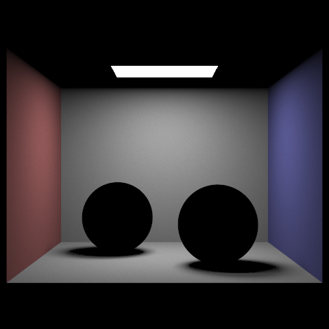
Fig 1.2:sky/CBspheres.dae rendered with max ray depth of 1.
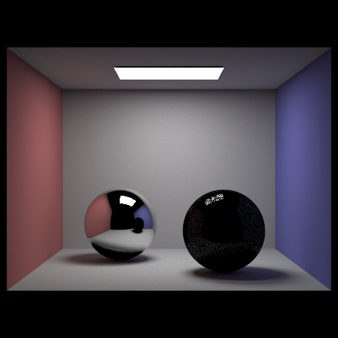
Fig 1.3:sky/CBspheres.dae rendered with max ray depth of 2.
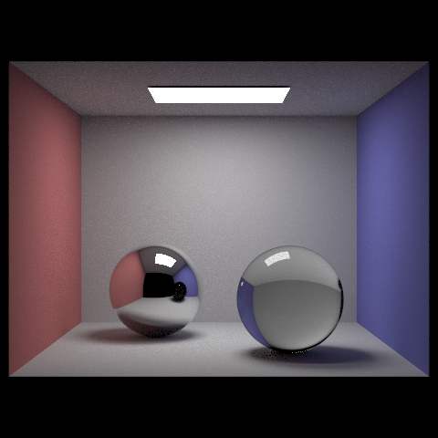
Fig 1.4:sky/CBspheres.dae rendered with max ray depth of 3.
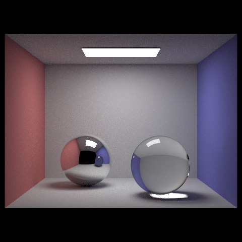
Fig 1.5:sky/CBspheres.dae rendered with max ray depth of 4.
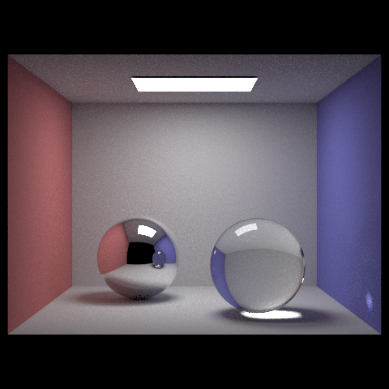
Fig 1.6:sky/CBspheres.dae rendered with max ray depth of 5.
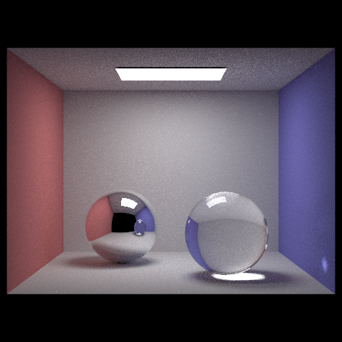
Fig 1.7:sky/CBspheres.dae rendered with max ray depth of 300.
Microfacet BSDFs allow a pathtracer to render glossy, metallic surfaces in a more realistic fashion (compared to simply averaging between a mirror and diffuse BSDF). Such BSDFs are not delta BSDFs; therefore, MicrofacetBSDF::f returns a spectrum based on the following formula:
Here's a description of each of the variables used in the formula:
wi and wo are unit incident and exitant vectors coming out of a surface's intersection point.
h is the "half vector" computed as the unit vector in the direction of the sum of the incident and exitant vectors. This vector bisects the angle formed by the incident and exitant vectors.
F(wi) is the Fresnel term, which generates a spectrum based on a set of parameters specific to the microfacet material. The formula behind generating the spectrum is outlined in the project spec.
G(wo, wi) is the shadow-masking term, which returns a scalar term in between 0 and 1 based on starter code.
D(h) is the normal distribution term, which returns the scalar value of a Beckmann normal distribution function based on the angle between the half-vector and the normal.
The process behind importance-sampling-driven MicrofacetBSDF::sample_f gets complicated. First, we randomly sample a half vector (using a roughness parameter) using formulae described in the project spec before computing the incident vector from the given exitant vector and sampled half vector. Next, we use another elaborate formula mentioned in the project spec to compute the PDF from the half vector, incident vector, and the aforementioned roughness parameter. Finally the resulting spectrum is returned as a call to MicrofacetBSDF::f using the exitant and incident vectors are arguments. The result of the sampling process is that light is scattered more diffusely around when a light ray hits the surface at a shallow angle and less so when at a steep angle, creating the effect of glossiness on the surface.
A naïve implementation of MicrofacetBSDF::sample_f simply uses a uniform hemisphere sampler to compute the incident vector. This approach falls short in terms of performance compared to importance sampling in that hemisphere sampling is more likely to sample parts of the hemisphere that do not contribute much to the incoming radiance, leading to regions with large contributions to radiance sometimes being left out. The result of this is that it noticeably takes longer for hemisphere sampling to converge compared to importance sampling, as can be seen in the differencein noise between the two images below:
NOTE: All images in this table were rendered with 64 samples per pixel.
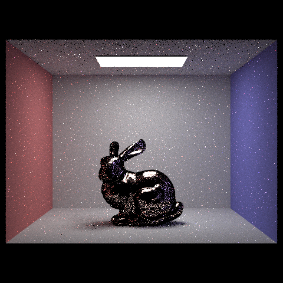
Fig 2.1:sky/CBbunny_microfacet_cu.dae rendered with hemisphere BSDF sampling.
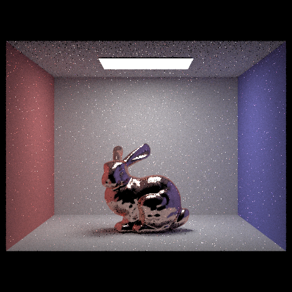
Fig 2.2:sky/CBbunny_microfacet_cu.dae rendered with importance BSDF sampling.
As roughness increases, the material appears to be more and more diffuse. On the other hand, as roughness decreases, the surface becomes glossier, with stronger contrast between the colors of reflected light. Decreasesd roughness also has the side effect of increasing convergence time.
NOTE: All images in this table were rendered with 1024 samples per pixel.
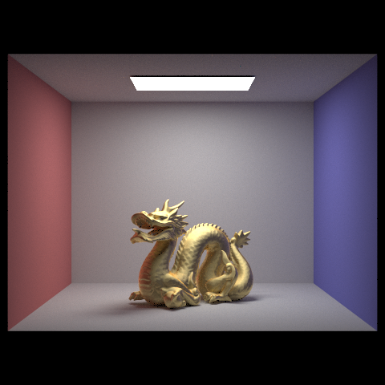
Fig 2.3:sky/CBdragon_microfacet_au.dae rendered with roughness = 0.5.
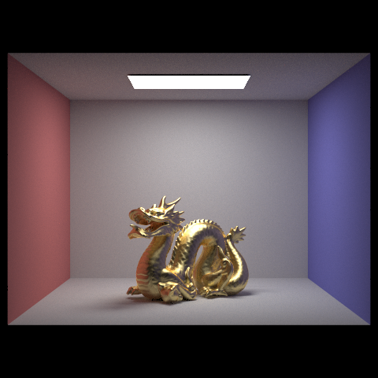
Fig 2.4:sky/CBdragon_microfacet_au.dae rendered with roughness = 0.25.
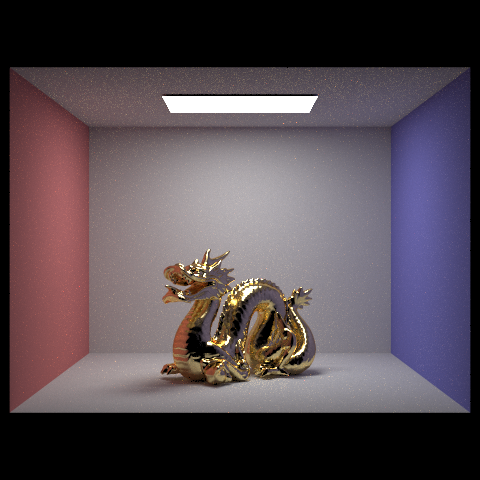
Fig 2.5:sky/CBdragon_microfacet_au.dae rendered with roughness = 0.05.
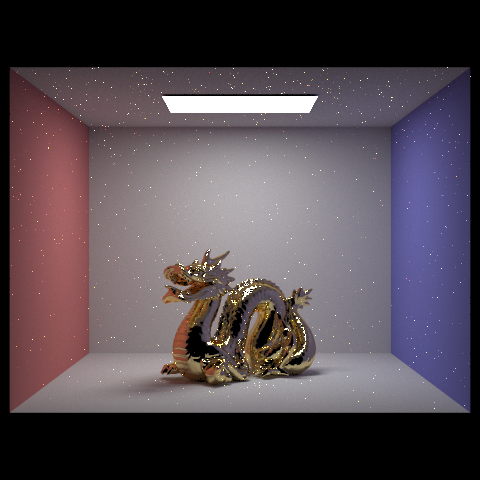
Fig 2.6:sky/CBdragon_microfacet_au.dae rendered with roughness = 0.005.
By looking up eta (refractive index) and k values (extinction coefficient) for wavelengths of red, green, and blue light, one can enter these values into a .dae file to give it a custom material. In this case, I decided to select beryllium as the custom material, which yields a gray metallic quality when used on sky/CBbunny.dae. The specific eta and k values used for beryllium, as specified in this webpage, are as follows:
Refractive coefficients for beryllium.
Red Light (614 nm)
Green Light (549 nm)
Blue Light (466 nm)
Refractive index, η
3.3875
3.3093
3.1268
Extinction coefficient, k
3.1685
3.1344
3.1245
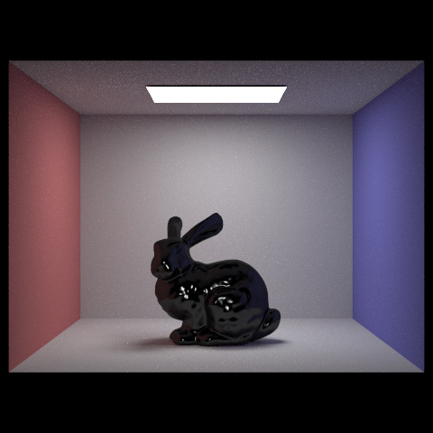
Fig 2.7:sky/CBbunny_microfacet_be.dae rendered with 1024 samples per pixel and 4 samples per light.
The code for this part is implemented in the file static_scene/environmental_light.cpp. Here, we fill in the EnvironmentLight::sample_dir function by converting the input ray into theta-phi and later XYZ coordinates that can then be interpolated into a location on the enviromental light's texture using the existing EnvironmentLight::bilerp function.
Next, we implement uniform sampling in the EnvironmentLight::sample_L function by setting the incident vector to be a vector uniformly sampled from a hemisphere before converting the vector into theta-phi coordinates and then later UV coordinates on which EnvironmentLight::bilerp can be called in order to yield an output spectrum.
Finally, we replace uniform sampling with importance sampling in the EnvironmentLight::sample_L function. This task consists of two parts to handle:
Set up probability data in EnvironmentLight::init()
Calculate the PDF of the environment map by first setting each entry of the map PDF to be the corresponding environment map entry's illumination multiplied by the sine of an angle dependent on the zenith angle. In the meantime, keep track of the sume of all the PDF entries before later dividing every entry by the total sum so that the sum of entries in the PDF is 1.
Compute the marginal distribution for y, i.e. the probability that a sampled location has a y value of a certain value or less. We keep track of the sum of PDF values and iterate row-by-row (slowly increasing y), setting the next value in the marginal probability array to be the sum after completing a column.
Calculate the conditional distribution for x given y by first finding the PDF of the marginal y array by mapping each value of the array in the following fashion:
Then, given the marginal PDF, we compute the conditional probability for a environment map location (i, j) as the environmental map PDF value at that location divided by the marginal PDF value for corresponding to j.
Optionally, save a probability debug image whose R and G values are dependent on marginal y and conditional probabilities, respectively. This part is already done in the starter code.
Do importance sampling in EnvironmentLight::sample_L
Sample from a uniform grid values (x,y).
Initialize a location (i,j) at (0,0)
While the marginal probability for j is less than y, increment j. While the conditional probability for i and j is less than x, increment i. This effectively samples from a grid_based PDF with variable probability weights.
Set the incident vector to be (i,j) converted into a direction vector.
Set the PDF to be the PDF corresponding to (i, j) in the environment map multiplied by the dimensions of the environment map and divided by the product of 2, pi squared, and the sin of the incident angle.
Return as the output spectrum the environment map illumination at location (i, j), no bilerping needed!
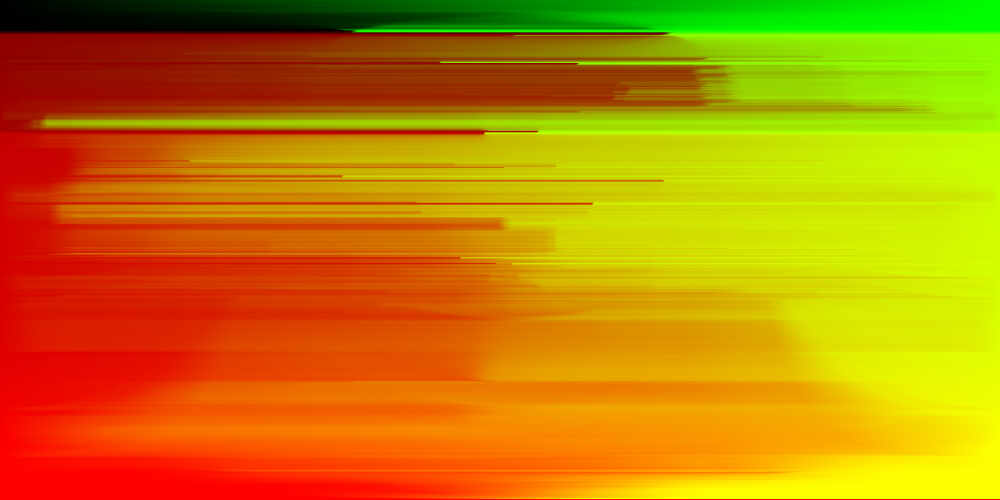
Fig 3.1: Probability debug picture for grace.exr.
Environmental lighting works by mapping a texture image (called an environment map) to a hemisphere forming the background of the render. Any location within the environment map produces an illumination corresponding to the color of that point in the environment map. Rays are sampled from this environmental light in a direction perpendicular to and inward from the hemisphere. Next, pathtracing continues as usual for the ray. This type of lighting is an effective way of rendering scenes that interact with backgrounds without having to model the shapes of the background or add other light sources.
As expected, it takes significantly longer for hemisphere sampling to converge compared to importance sampling, as evidence by the increased amount of noise present in the hemisphere sampling pictures when compared to the importance sampling pictures. Another thing of note is how the microfacet surface is noisier compared to the diffuse surface under importance sampling but appears slightly less noisy than the diffuse surface under hemisphere sampling.
NOTE: All images in this table were rendered with 64 samples per pixel.
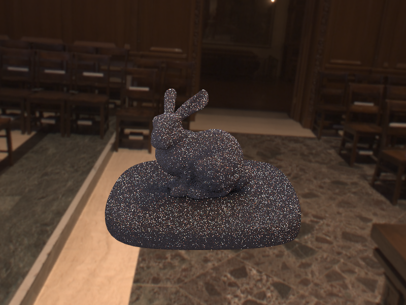
Fig 3.2:sky/bunny_unlit.dae rendered with environment grace.exr.
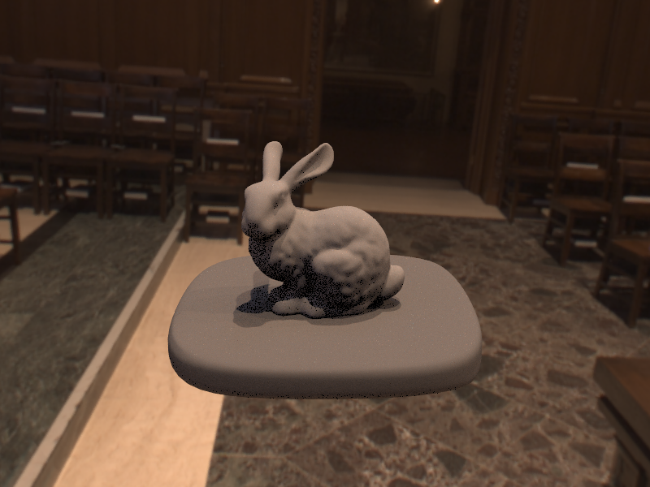
Fig 3.3:sky/bunny_unlit.dae rendered with environment grace.exr.
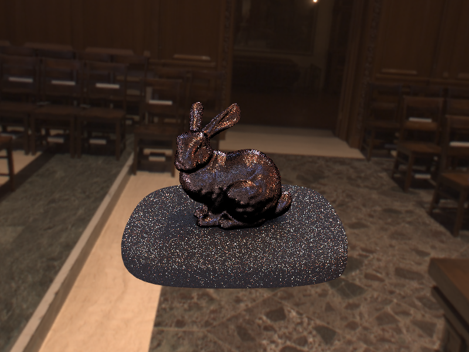
Fig 3.4:sky/bunny_microfacet_cu_unlit.dae rendered with environment grace.exr.
Fig 3.5:sky/bunny_microfacet_cu_unlit.dae rendered with environment grace.exr
The key difference between a pinhole and thin lens is what happens at the camera space plane at z = 0. All rays in a pinhole camera model intersect the camera space origin, whereas rays in the thin lens model can intersect anywhere within the lens (apeture) radius of the camera space origin on the z = 0 plane. As a result, we modify ray generation for a thin lens camera model by uniformly sampling a point on the lens area and returning a unit ray starting at the sampled point and pointing towards where the pinhole camera model ray would intersect the plane z = d given a positive focal distance d. The focal distance determines where all the sampled ray converge in 3D space, creating the effect of objects near the focal distance away from the lens plane having sharper detail and objects further away being more blurred. One thing to note is that an apeture radius of 0 causes a thin lens model to become a pinhole model.
As focal distance increases, the areas of focus (less blurring) become farther away from the camera, moving from the front of the dragon towards the corner behind the dragon.
NOTE: All images in this table were rendered with apeture radius = 0.04.
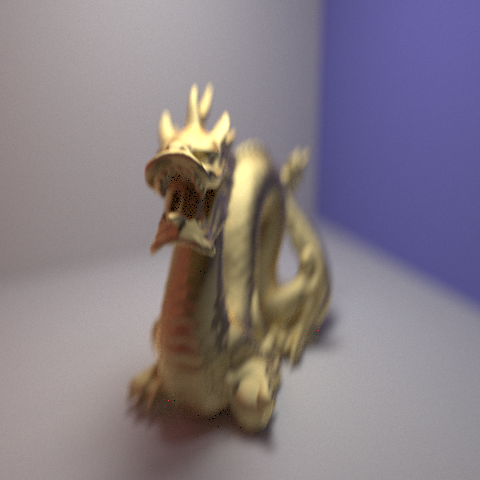
Fig 4.1:sky/CBdragon_microfacet_au.dae rendered with focal distance = 1.2.
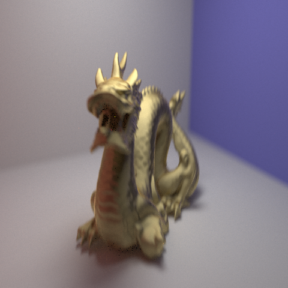
Fig 4.2:sky/CBdragon_microfacet_au.dae rendered with focal distance = 1.5.
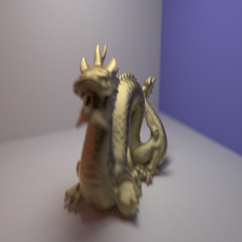
Fig 4.3:sky/CBdragon_microfacet_au.dae rendered with focal distance = 1.7.
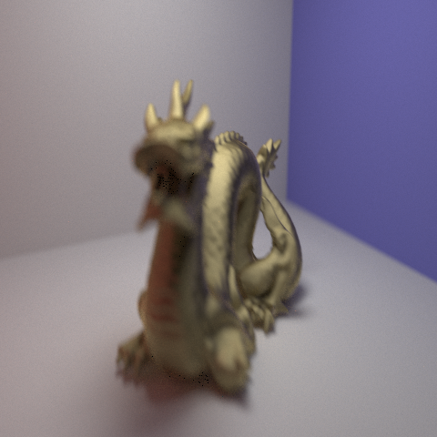
Fig 4.4:sky/CBdragon_microfacet_au.dae rendered with focal distance = 1.9.
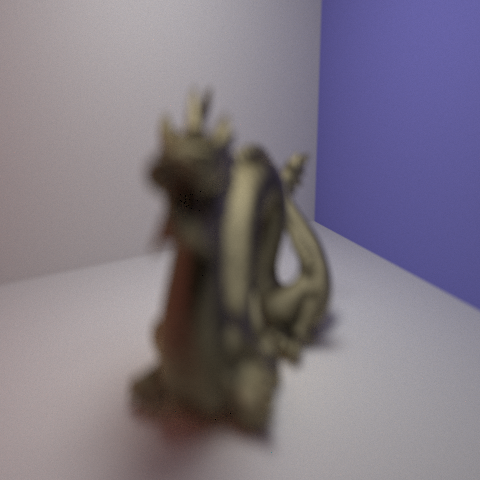
Fig 4.5:sky/CBdragon_microfacet_au.dae rendered with focal distance = 3.2.
As apeture radius increases, the rate at which details outside get more blurry in respect to distance from the focal plane increases. Note how the same general area around the top of the dragon's head remains relatively unblurred throughout all the renders below.
NOTE: All images in this table were rendered with focal distance = 1.5.
Fig 4.6:sky/CBdragon_microfacet_au.dae rendered with apeture radius = 0.0.
Fig 4.7:sky/CBdragon_microfacet_au.dae rendered with apeture radius = 0.04.
Fig 4.8:sky/CBdragon_microfacet_au.dae rendered with apeture radius = 0.08.
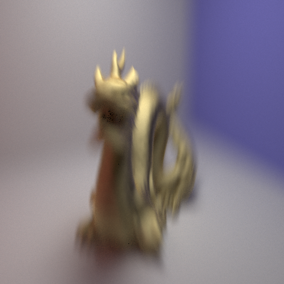
Fig 4.9:sky/CBdragon_microfacet_au.dae rendered with apeture radius = 0.16.